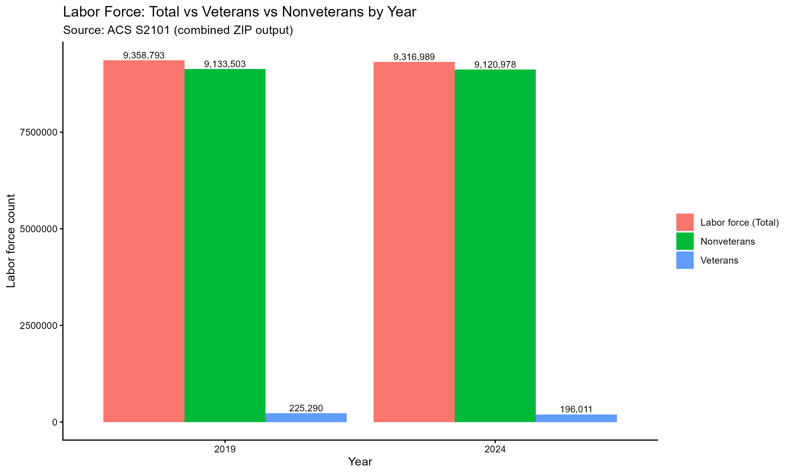
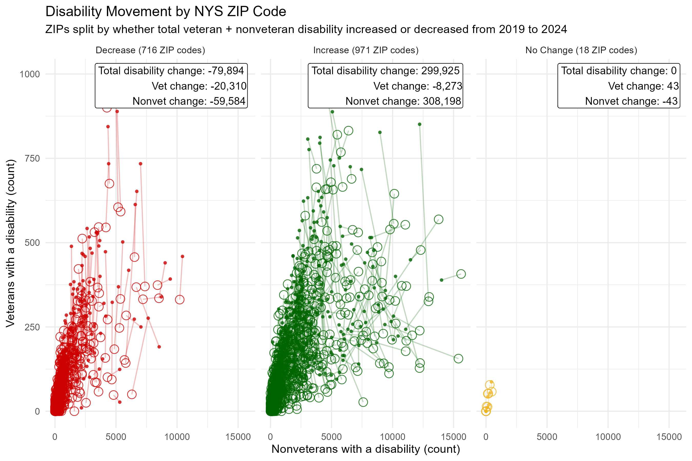

New York State’s disability count increased significantly overall, but the ACS 5-year estimates suggest veterans were the one group that showed measurable improvement. This data represents a major shift in the state's health and accessibility landscape between 2019 and 2024.
The contrast in growth rates is stark when comparing the veteran community to the broader population:
While this 14.6% reduction is encouraging news, the 167,819 veterans currently living with a disability still represent a massive population requiring specialized services. This data reinforces the continued need for targeted support to maintain these gains and address the "sticky" disability pockets found at the local level.

Data: U.S. Census Bureau ACS 5-year estimates (2019 & 2024). Cleaned and summarized in RStudio. | Download: PDF
Unlike the shared "economic tide" observed in poverty trends, the ZIP-level pattern for disability reveals a veteran-specific shift. When communities are grouped by their total disability trends, the veteran population does not follow the broader community trajectory. This suggests that veteran disability movement is driven by factors unique to the veteran experience rather than local health or environmental trends.
The ACS 5-year estimates show that veteran disability decreased regardless of whether the surrounding community was "improving" or "worsening":
The Conclusion: Because veteran disability is declining even in ZIP codes where overall disability is spiking, this movement cannot be explained by broader geographic shifts. This divergence warrants deeper analysis into veteran specific factors; such as demographic aging, migration, or changes in service connected compensation that may be affecting these numbers independently of the local community.

Data: U.S. Census Bureau ACS 5-year estimates (2019 & 2024). Cleaned and summarized in RStudio. | Download: PDF
The table below provides a high-resolution look at the disability counts for every ZIP code in New York State. By moving away from broad regional summaries, this index allows you to see the exact shifts occurring in individual neighborhoods between 2019 and 2024.
Each entry includes micro-visualizations (to-scale horizontal bars) that represent the population of veterans and non-veterans. This layout is designed for rapid skimming to identify:
Take a moment to scroll through and identify how your community compares with the statewide patterns identified in the analysis above. The visual bars are to scale, allowing you to see the true physical impact of population differences across the state.
Data: U.S. Census Bureau ACS 5-year estimates (2019 & 2024). Cleaned and summarized in RStudio. | Download: PDF